1과목: 청소년 상담의 이론과 실제
1. 예방적인 측면에서의 청소년상담 목표에 해당하지 않는 것은?
2. 상담 초기단계에 이루어지는 상담구조화에 관한 내용으로 옳지 않은 것은?
3. 상담 중기단계에 나타난 내담자의 저항에서 청소년상담자가 고려해야 할 내용이 아닌 것은?
4. 현실치료의 WDEP 모델에 관한 설명으로 옳은 것을 모두 고른 것은?
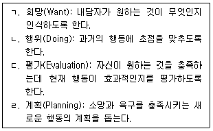
5. 실존주의 상담이론의 주요개념이 아닌 것은?
6. 인지치료의 상담기법과 적용의 연결로 옳은 것을 모두 고른 것은?
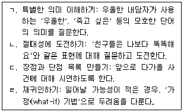
7. 지역사회를 기반으로 한 청소년상담에 관한 내용으로 옳지 않은 것은?
8. 행동주의 상담에 관한 내용으로 옳지 않은 것은?
9. 다음 사례에서 상담자가 종결단계에 질문하고 있는 내용에 해당하는 것은?
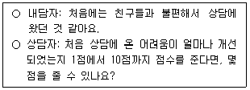
10. 청소년 내담자의 특성으로 옳지 않은 것은?
11. 합리정서행동상담에서 ABCDE 모형을 순서대로 옳게 나열한 것은?
12. 아들러(A. Adler)가 제시한 생활양식에 관한 내용으로 옳은 것은?
13. 인터넷 및 스마트폰 과의존 청소년의 개인심리적 특성이 아닌 것은?
14. 다음에서 설명하고 있는 정신분석 상담의 기법은?
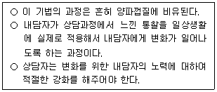
15. 로저스(C. Rogers)의 '충분히 기능하는 사람'에 관한 특징이 아닌 것은?
16. 상담이론과 기법의 연결로 옳은 것은?
17. 다음에서 설명하고 있는 실존주의 상담 기법은?
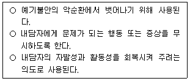
18. 해결중심단기 상담에서 '메시지' 전달의 기능이 아닌 것은?
19. 다음 사례에서 사용된 상담자의 상담기술은?
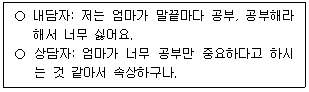
20. 청소년상담사 윤리강령에 명시된 '다양성 존중'에 해당하는 것은?
21. 다음 사례에서 청소년 내담자가 사용한 방어기제는?
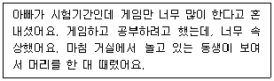
22. 다음은 교류분석 상담의 주요개념에 관한 내용이다. ( )에 들어갈 용어로 옳은 것은?
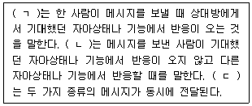
23. 청소년 매체상담에 관한 설명으로 옳은 것을 모두 고른 것은?
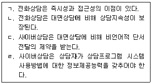
24. 다음 사례에서 상담자가 사용한 상담기술에 관한 설명으로 옳은 것은?
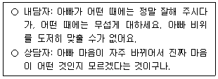
25. 지역사회 청소년통합지원체계(청소년안전망)의 필수연계기관으로 옳은 것을 모두 고른 것은?
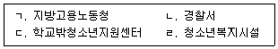
2과목: 상담연구방법론의 기초
26. 상담연구방법 중 질적 연구의 특징에 해당하지 않는 것은?
27. 보편적인 법칙이나 일반적인 이론으로부터 도출된 가설을 경험적으로 검증하여 이론을 증명하고 현상을 설명ㆍ예측하는 연구방법은?
28. 양적연구 논문 작성 시 '연구방법' 부분에 포함해야 할 내용을 모두 고른 것은?
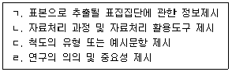
29. 통계적 가설검정 시 유의수준( 값)을 0.⑤에서 0.01로 설정하였을 때의 설명으로 옳은 것은?
30. 양적연구에서 조작적 정의에 관한 설명으로 옳지 않은 것은?
31. 척도에 관한 설명으로 옳지 않은 것은?
32. 다음에 나타난 표본추출기법에 관한 설명으로 옳은 것은?
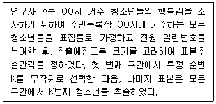
33. 단순회귀 모형 Yi = b0 + b1Xi + εi과 결정계수 R2에 관한 설명으로 옳은 것은?
34. 다음의 연구방법과 자료분석 방법의 연결로 옳은 것을 모두 고른 것은?
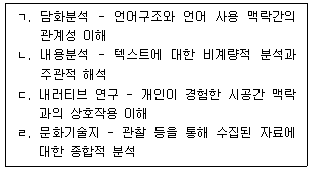
35. 실험연구의 내적타당도에 관한 설명으로 옳은 것을 모두 고른 것은?
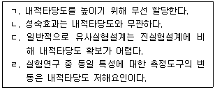
36. 측정도구의 타당도에 관한 설명으로 옳지 않은 것은?
37. 크론바하 알파(Cronbach's alpha)값에 관한 설명으로 옳은 것을 모두 고른 것은?
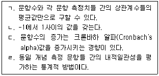
38. 다음 연구에 관한 설명으로 옳은 것은?
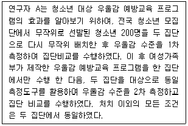
39. 다음은 청소년의 우울감 수준에 영향을 미치는 요인들에 대한 가상의 다중회귀분석 결과를 요약한 것이다. 이에 관한 설명으로 옳지 않은 것은?
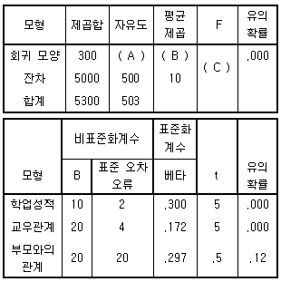
40. 통계적 가설검정에 관한 설명으로 옳은 것은?
41. 유사실험설계(quasi - experimental design)에 관한 설명으로 옳은 것은?
42. 상담연구에서 단일사례연구설계(single-case research design)에 관한 설명으로 옳은 것은?
43. 모의상담연구에 관한 설명으로 옳은 것은?
44. 변수 X와 Y간 공분산과 피어슨(Pearson) 적률상관계수에 관한 설명으로 옳은 것을 모두 고른 것은?
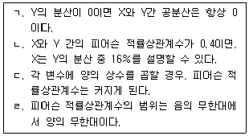
45. 상관관계 분석에서 상관계수
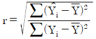
로 정의할 때의 설명으로 옳지 않은 것은?46. 현상학적 접근방식에 관한 설명으로 옳지 않은 것은?
47. 근거이론에 관한 설명으로 옳은 것을 모두 고른 것은?
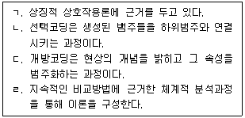
48. 합의적 질적연구(CQR)에서 연구 참여자의 단어를 명확ㆍ간결하게 정리ㆍ편집하고 비언어적 단서를 발화내용 중심으로 추출하는 분석단계는?
49. 인간 대상 실험연구윤리를 다룬 벨몬트 보고서(The Belmont Report)에서 연구자가 고려해야 할 '정의의 원칙'에 관한 설명으로 옳은 것은?
50. 다음에 해당하는 상담 연구윤리의 기본원칙은?
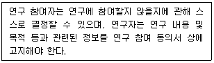
3과목: 심리측정 평가의 활용
51. 다음 ( )에 들어갈 학자를 바르게 나열한 것은?
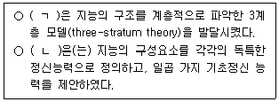
52. 심리검사에 관한 설명으로 옳은 것을 모두 고른 것은?
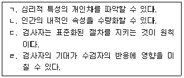
53. 심리검사 개발에 관한 설명으로 옳은 것은?
54. 심리검사 실시에 관한 설명으로 옳은 것을 모두 고른 것은?
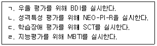
55. 심리평가를 위한 면담에 관한 설명으로 옳지 않은 것은?
56. 구조화된 면담과 비교하여 비구조화된 면담의 특징으로 옳지 않은 것은?
57. 다음에 해당하는 측정방식은?
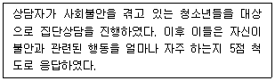
58. 심리측정의 오차에 관한 설명으로 옳지 않은 것은?
59. 심리평가와 관련된 비밀 보장 윤리의 예외 사항을 모두 고른 것은?
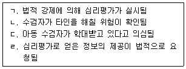
60. 심리검사A와 심리검사B의 표준편차가 동일하고 검사-재검사 신뢰도는 A가 0.7, B가 0.9 일 때, 옳지 않은 것은?
61. 다음 ( )에 공통으로 들어갈 말은?
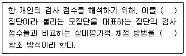
62. 다음은 타당도에 관한 설명이다. ( )에 들어갈 내용으로 옳은 것은?
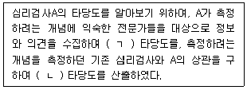
63. Z 점수가 +2일 때 이에 해당하는 T 점수는?
64. K-WAIS-IV의 소검사에 관한 설명으로 옳지 않은 것은?
65. K-WISC-V에 관한 설명으로 옳지 않은 것은?
66. 지능지수(IQ)에 관한 설명으로 옳은 것을 모두 고른 것은?
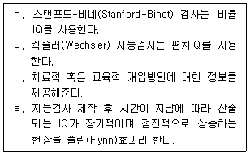
67. MMPI-2의 척도들 중 증상이나 진단과 독립적으로, 수검자가 스스로 인식하고 직접적으로 호소하는 문제나 어려움들을 측정하고자 개발된 것은?
68. MMPI-2의 코드 유형 해석에 관한 설명으로 옳은 것은?
69. 세로토닌 방출이 결정적 역할을 한다고 클로닝거(C. Cloninger)가 제안한 기질차원을 측정하는 TCI의 척도는?
70. 다음 사례에서 P씨의 특징을 반영하는 심리검사 결과로 적절한 것을 모두 고른 것은?
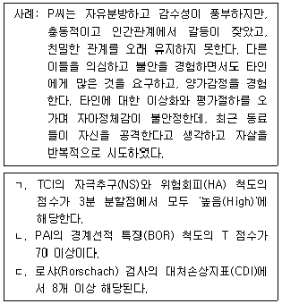
71. PAI의 치료고려 척도에 해당하지 않는 것은?
72. TAT에 관한 설명으로 옳지 않은 것은?
73. 객관적 검사와 비교하여 투사적 검사의 장점으로 옳은 것은?
74. 로샤(Rorschach) 검사에 관한 설명으로 옳지 않은 것은?
75. HTP 검사에 관한 설명으로 옳지 않은 것은?
4과목: 이상심리
76. 이상행동에 관한 생물학적 이론의 설명으로 옳은 것은?
77. 이상행동의 분류와 평가의 장점에 관한 설명으로 옳지 않은 것은?
78. DSM-5의 신경발달장애에 관한 설명으로 옳은 것을 모두 고른 것은?
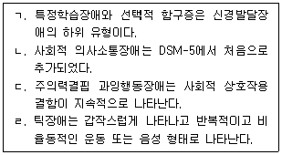
79. DSM-5의 우울장애에 관한 설명으로 옳은 것을 모두 고른 것은?
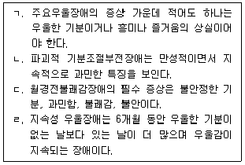
80. DSM-5의 조현병 진단기준에 해당하는 것을 모두 고른 것은?
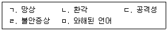
81. DSM-5의 불안장애에 관한 설명으로 옳은 것은?
82. DSM-5의 양극성 관련 장애에 관한 설명으로 옳지 않은 것은?
83. DSM-5에서 제시된 공황장애 증상으로 옳지 않은 것은?
84. DSM-5의 뚜렛장애에 관한 설명으로 옳은 것은?
85. DSM-5의 망상장애에 관한 설명으로 옳지 않은 것은?
86. DSM-5의 지속성 우울장애 진단기준에 관한 설명으로 옳은 것을 모두 고른 것은?
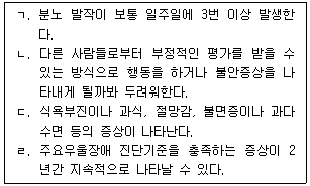
87. 이상행동의 분류와 평가체계에 관한 설명으로 옳은 것은?
88. DSM-5의 강박 및 관련장애에 해당하지 않는 것은?
89. DSM-5의 외상 및 스트레스 관련장애의 하위유형에 관한 설명으로 옳지 않은 것은?
90. DSM-5의 해리성 정체감장애에 관한 설명으로 옳은 것은?
91. 신체증상 및 관련 장애에 관한 설명으로 옳은 것을 모두 고른 것은?
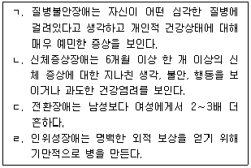
92. DSM-5의 이식증에 관한 설명으로 옳은 것은?
93. 사건수면(parasomnias)에 해당하는 것은?
94. 다음에 해당하는 DSM-5의 성 관련 장애로 옳은 것은?
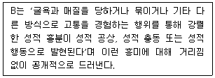
95. DSM-5의 적대적 반항장애에 관한 설명으로 옳지 않은 것은?
96. DSM-5의 알코올 중독 진단 증상에 관한 내용으로 옳지 않은 것은?
97. DSM-5의 주의력결핍 과잉행동장애에 관한 설명으로 옳지 않은 것은?
98. 다음에 해당하는 DSM-5의 진단명으로 옳은 것은?
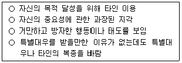
99. DSM-5의 연극성 성격장애에 관한 설명으로 옳지 않은 것은?
100. DSM-5의 '임상적 주의의 초점이 될 수 있는 기타의 상태' 중 '사회환경과 관련된 기타 문제'에 속하지 않는 것은?